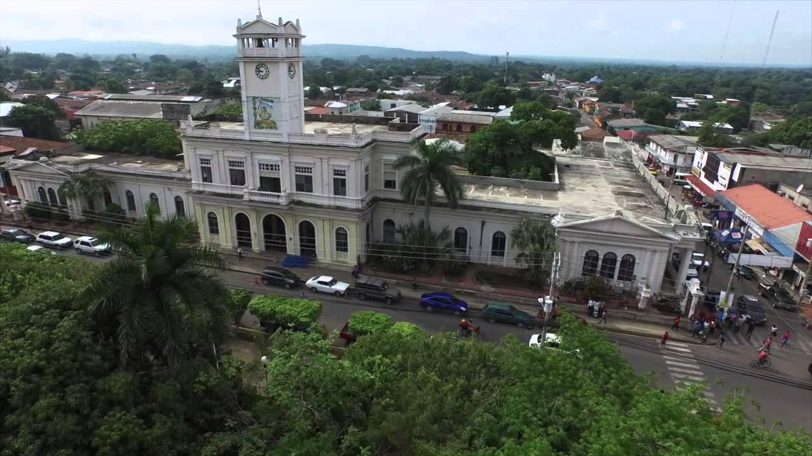
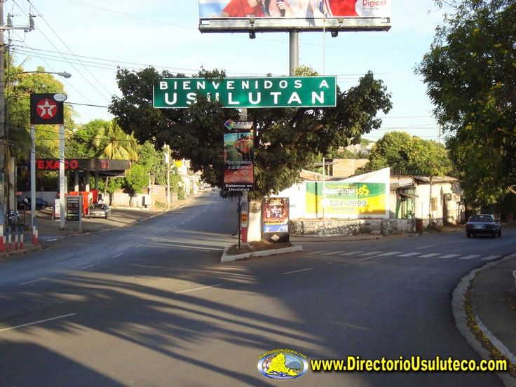

Usulután es una ciudad de El Salvador, que es cabecera del municipio y departamento homónimos. De acuerdo al censo oficial de 2007, tiene una población de 73 064 habitantes.1 El municipio cubre un área de 139,77 km² y tiene una altitud de 90 msnm. El topónimo náhuat Usulutan significa «Ciudad de los ocelotes»; otras acepciones son «Lugar de los olotes preñados o gruesos» o «Donde abundan las iguanas».
El Puerto El Triunfo y Puerto Parada son otros de los atractivos turísticos y comerciales de la región. Estas opciones hacen de Usulután sea uno de los lugares mas visitados por turistas nacionales y extranjeros en época de verano. Usulután posee hermosas ciudades que son conocidas por la cordialidad de sus pobladores y por la belleza que poseen, por eso turistas nacionales e internacionales, las visitan. Este departamento del oriente del país, fue llamado, en los años del florecimiento agrícola, “El granero de El Salvador”, por su basta producción de granos básicos. Está situado en la costa baja, a unos 90 metros sobre el nivel del mar y a 110 kilómetros de San Salvador, por la carretera del Litoral, autopista en perféctas condiciones que atraviesa todo el territorio salvadoreño por la parte costera. Usulután, es un departamento que cuenta con grandes atractivos turísticos, tanto en la zona costera como en su cordillera montañosa.
